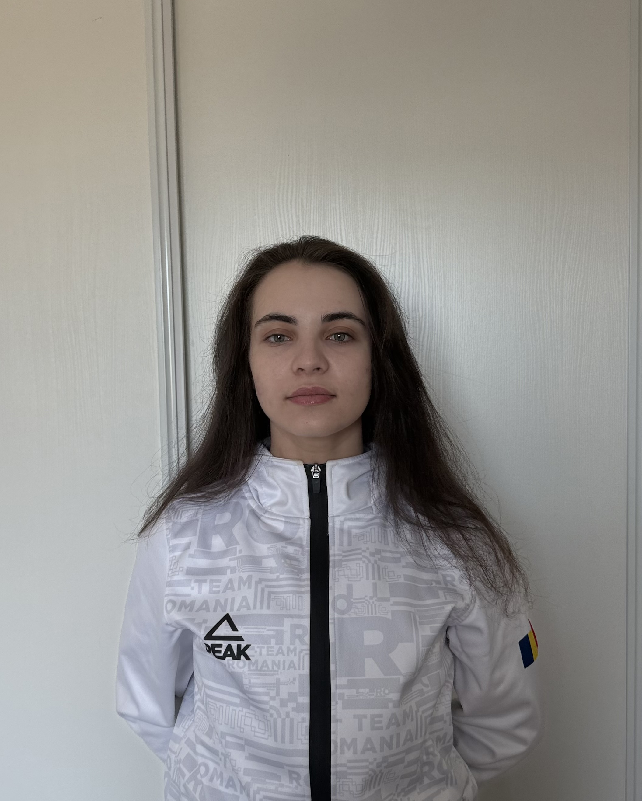

Le projet BR3A vise à concevoir un bras robotique articulé capable de récupérer des verres de manière autonome dans un environnement de bar. Ce robot combine mécanique, électronique et programmation pour offrir un service rapide, précis et sécurisé, facilitant le travail des barmans et améliorant l'efficacité du nettoyage.
Développement d'un bras articulé intelligent au service des Barmans


Découvrez notre prototype BR3A en pleine action lors des phases de test.
Pour interagir de manière autonome avec son environnement, le bras BR3A est couplé à un système de vision intelligent chargé de localiser les verres en temps réel.

La caméra surveille en continu la zone du comptoir, modélisée sous la forme d'une matrice visuelle (un quadrillage de cases bien définies). Lorsqu'un client dépose un verre, le système de vision analyse l'image, détecte le changement et identifie instantanément dans quelle case de la matrice l'objet a été placé.
Cette information de positionnement spatial est directement transmise au programme de contrôle du bras. Le robot sait alors exactement où se situe le verre pour planifier sa trajectoire, aller le chercher avec précision et le déplacer en toute sécurité vers sa zone de destination.
On observe ci-dessous la caméra qui détecte les limites de la matrice et capte en direct l'introduction d'un objet dans l'une des cases.
Synthèse rapide des caractéristiques matérielles, fonctionnelles et logicielles du prototype BR3A.
Retrouvez ci-dessous les livrables documentaires de notre projet.
Analyse du besoin, contraintes environnementales et spécifications techniques.
📄 Télécharger le CdCFDétails de l'architecture, choix des composants et dimensionnement.
📄 Télécharger le cahier de ConceptionÉtude du démantèlement, de la revalorisation des composants (actionneurs, capteurs) et de l'impact environnemental lié au recyclage des matériaux imprimés en 3D.
📄 Télécharger l'Analyse de fin de vieAnalyse complète du besoin pour l'environnement exigeant d'un bar. Cette étape comprend l'étude fonctionnelle, la définition des contraintes opérationnelles, ainsi que l'estimation de la durée de vie du système face à un usage intensif et aux risques d'éclaboussures.
Réalisation de la conception assistée par ordinateur (CAO) via SolidWorks. Nous avons modélisé les différents segments du bras, intégré les emplacements pour les moteurs et validé les amplitudes de mouvement nécessaires pour manipuler les verres en toute sécurité.


Mise en place de l'architecture logicielle de contrôle et de perception :
En cours de rédaction... Assemblage physique du robot, calibrage des moteurs en lien avec l'interface ROS2, et premiers tests en conditions réelles de préhension.


Coordination globale : Synchroniser la fabrication mécanique en PLA avec le calendrier de développement sur ROS a représenté notre principal défi organisationnel pour l'assemblage final.
Découvrez les membres de l'équipe et leurs rôles techniques sur le projet BR3A.

Pierre MICHAUD
Chef de projet
Responsable châssis, impression 3D, CAO
.JPG)
Léopold CARDON
PMO
Caméra (création de la matrice)

Edouard ROUX
Ingénieur projet
ROS, bridge bras-caméra, mise en mouvement

Baptiste URVOY
Ingénieur projet
Mise en fonctionnement de la caméra

Giulia BOTIS
Ingénieure projet
URDF et ROS